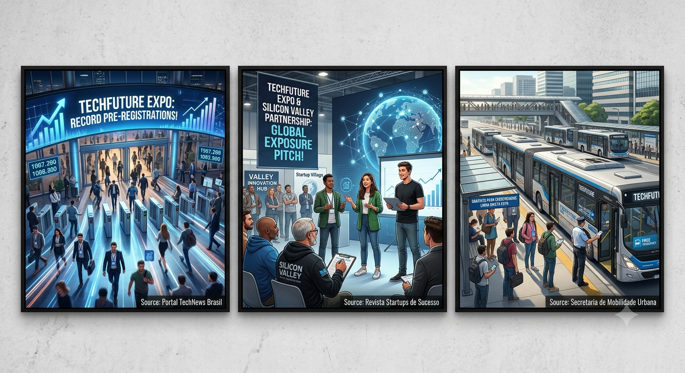

Nascida em 2018 como um pequeno encontro universitário, a TechFuture Expo cresceu exponencialmente. O que começou com apenas 3 palestrantes e 50 estudantes transformou-se no ecossistema que hoje move o mercado de inovação nacional, conectando os ecossistemas regionais às principais tendências mundiais.
Programação
Dia 1.. Tendências e IA
Nascida em 2018 como um pequeno encontro universitário, a TechFuture Expo cresceu exponencialmente. O que começou com apenas 3 palestrantes e 50 estudantes transformou-se no ecossistema que hoje move o mercado de inovação nacional, conectando os ecossistemas regionais às principais tendências mundiais.
10:30 - Modelos Avançados de IA Genérica (Palestrante: Dra. Ana Costa)
14:00 - Ética e Algoritmos na Sociedade Moderna (Palestrante: Prof. Carlos Souza)
16:00 - Cybersecurity na Era Computacional Atômica (Palestrante: Marina Dias)
Dia 2.. Desenvolvimento e Startups
09:00 - Do Zero ao IPO: O Guia das Startups (Palestrante: Investidor Marcos Lima)
11:00 - Arquitetura de Sistemas de Alta Escala (Palestrante: Eng. Paulo Reis)
14:30 - O Futuro da Web: Ecossistemas Descentralizados (Palestrante: Dev. Julia Fonseca)
10:00 - Internet das Coisas (IoT) em Cidades Inteligentes (Palestrante: Dr. Roberto Silva)
14:00 - Painel de Encerramento: Desafios Globais 2030 (Todos os palestrantes reunidos)
Notícia 1: "TechFuture Expo quebra recorde de inscrições prévias. A procura por credenciais superou todas as expectativas da organização." (Fonte: Portal TechNews Brasil)
Notícia 2: "Parceria fechada com hubs de inovação do Vale do Silício garante que startups nacionais selecionadas no pitch terão exposição global." (Fonte: Revista Startups de Sucesso)
Notícia 3: "Transporte Gratuito para Credenciados: Haverá ônibus circulares partindo das principais estações de metrô diretamente para o pavilhão do evento." (Fonte: Secretaria de Mobilidade Urbana)

Alpha Tech Soluções - São Paulo - SP - Inteligência Artificial - A-12